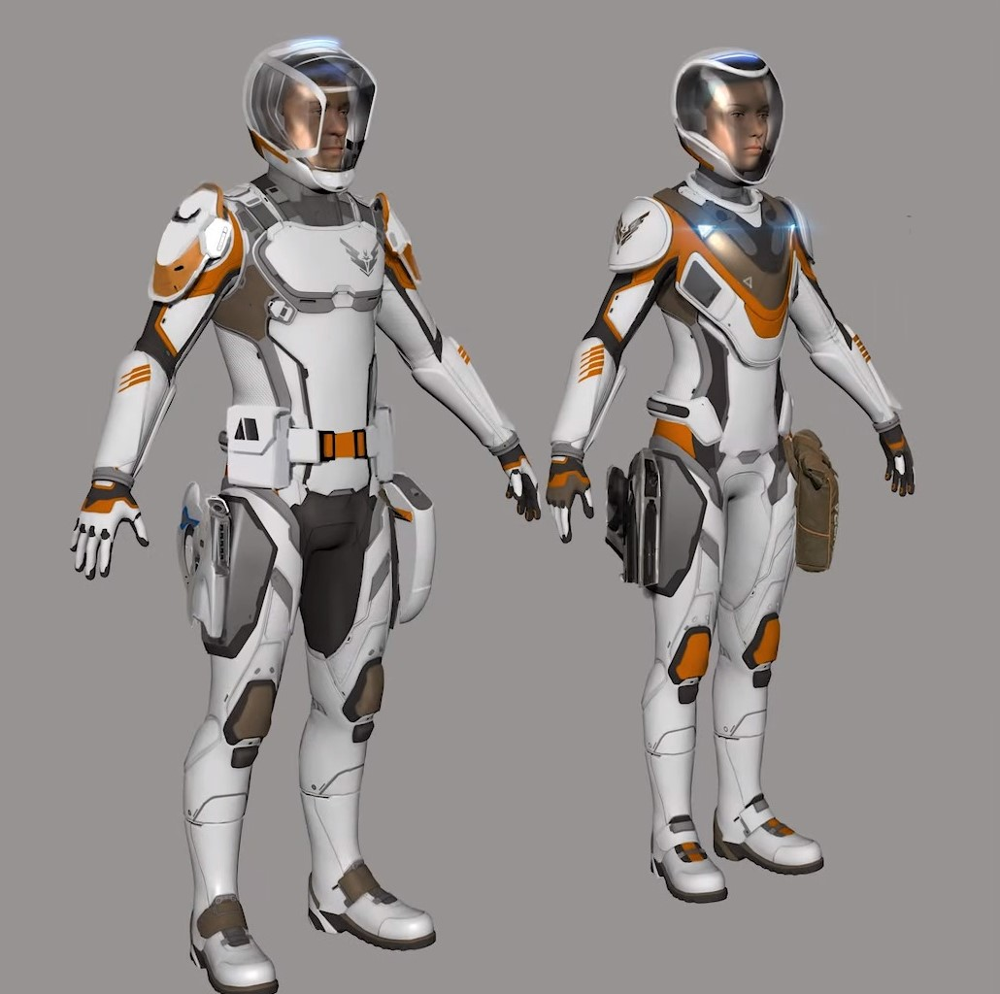
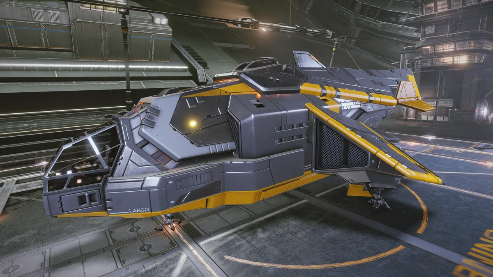
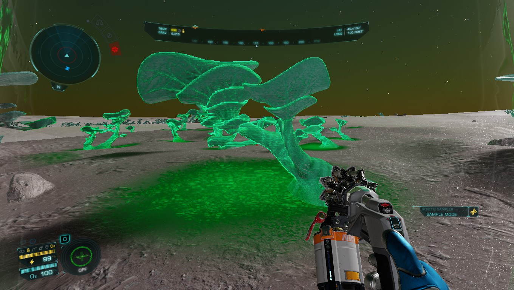
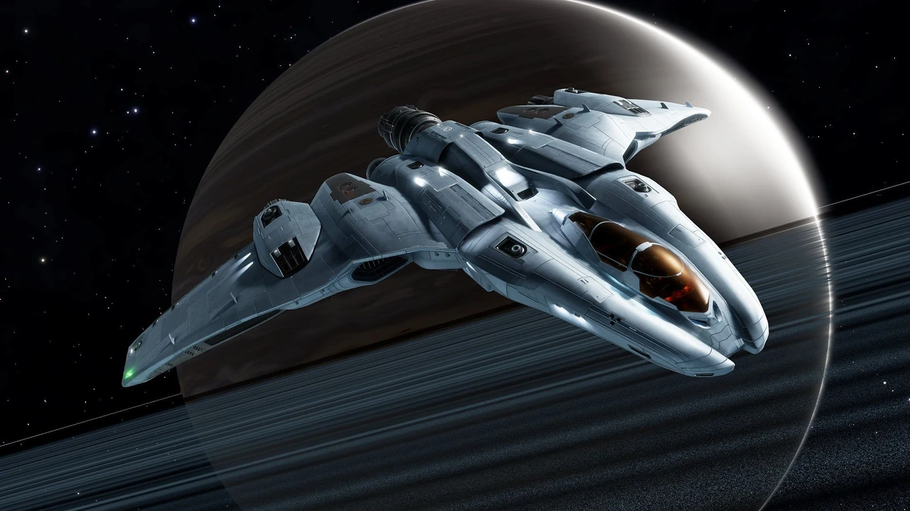

Исследование космических тел и экзобиология
Экзобиология в Elite Dangerous — это отдельная карьерная ветка, которая появилась с выходом дополнения Odyssey. Её суть — в исследовании инопланетных форм жизни на поверхности планет и лун, сборе их генетических образцов и продаже этих данных. Это не просто механика, а целая система, которая позволяет прокачивать специальный ранг экзобиолога.
С чего начать исследования
Чтобы заниматься экзобиологией, вам понадобится:
-
Костюм Artemis.

Именно в него встроен инструмент — генетический пробоотборник (Genetic Sampler), который нужен для сбора образцов. Костюм можно купить на станциях или аванпостах в магазине Pioneer Supplies.
Что в нём особенного?
Генетический пробоотборник. Это ключевая фишка: Artemis — единственная модель в игре, где этот инструмент встроен изначально. Он нужен, чтобы каталогизировать органические находки.
Энергоэффективность.
У комбинезона одна из самых высоких ёмкостей батареи (17 МВт) среди всех моделей, что полезно в долгих миссиях вдали от баз. Реактивный ранец. По характеристикам он лучший в игре — позволяет прыгать заметно выше, чем, например, у модели Maverick. Базовое вооружение. Есть слоты для основного и вспомогательного оружия. Это не боевая машина, но даёт минимальную защиту, если на исследователя внезапно нападут.
А есть минусы?
Да, компромисс в других параметрах: Меньше защита (мощность и восстановление щита ниже, чем у боевого Dominator). Меньше вместимость для расходников: можно носить только по одной гранате и одной аптечке.
-
Корабль

Корабль, оснащённый детальным поверхностным сканером (DSS). Без него обнаружить биологические сигналы на поверхности невозможно.
Какой корабль выбрать
Для начала отлично подойдёт Diamondback Explorer (DBE). Он доступный, достаточно манёвренный и при грамотной сборке хорошо закрывает потребности исследователя на первых порах. Альтернатива — Asp Explorer, он мощнее и лучше подходит для дальних экспедиций, но стоит дороже и требует больше ресурсов для оптимизации.
Что ставить в сборку
Главная цель — максимизировать дальность прыжка и автономность, при этом не перегружая корабль лишним весом.
- FSD (Frame Shift Drive, двигатель для межзвёздных прыжков).
- Топливозаборный модуль
- Автоматический ремонтный модуль
- Сканеры
- Системы жизнеобеспечения
Как проверить сборку
После установки модулей загляните в инструменты вроде Исследователь — там можно смоделировать сборку, посмотреть итоговую дальность прыжка и баланс массы.
- Знание механик сбора. Чтобы получить полный геном, нужно собрать три частичных образца одного вида. Важно брать их из разных особей, которые находятся за пределами ареала клональных колоний этого вида (это показано в записи Кодекса). Если начать сканировать другой вид до сбора трёх образцов первого, все собранные данные последнего будут потеряны.
Где искать?
Лучше всего искать экзобиологию:
-
Вдали от обитаемых систем. Во вновь открываемых звёздных системах в дальних уголках млечного пути

- На астрономических телах (планетах, лунах), где ещё никто не бывал. Такие объекты отмечаются специальным значком на карте системы при наведении курсора. За первичные находки в таких местах награда в 5 раз больше.
Как прокачиваться?
Несколько советов
-
Выбирайте подходящий корабль. Для экзобиологии удобнее
небольшие и манёвренные суда, которые могут сесть на
небольших площадках, в том числе на пересечённой местности.
Среди вариантов отмечают Imperial Courier, Dolphin,
Diamondback Explorer. Особого внимания заслуживает
Nomad — это компактный модуль, который можно запустить с
крупного исследовательского корабля. Его узкие посадочные
полозья позволяют садиться в очень сложных условиях
(на склонах, среди камней), где крупный корабль просто не
найдёт подходящей площадки.

-
Не пренебрегайте сканерами. Помимо DSS, для эффективного поиска важно уметь правильно использовать системный сканер полного спектра (FSS).
-
Будьте внимательны при посадке. Иногда из-за неровного рельефа или неудачного места корабль не может сесть вплотную к биологическому сигналу, и приходится отходить, а потом возвращаться.